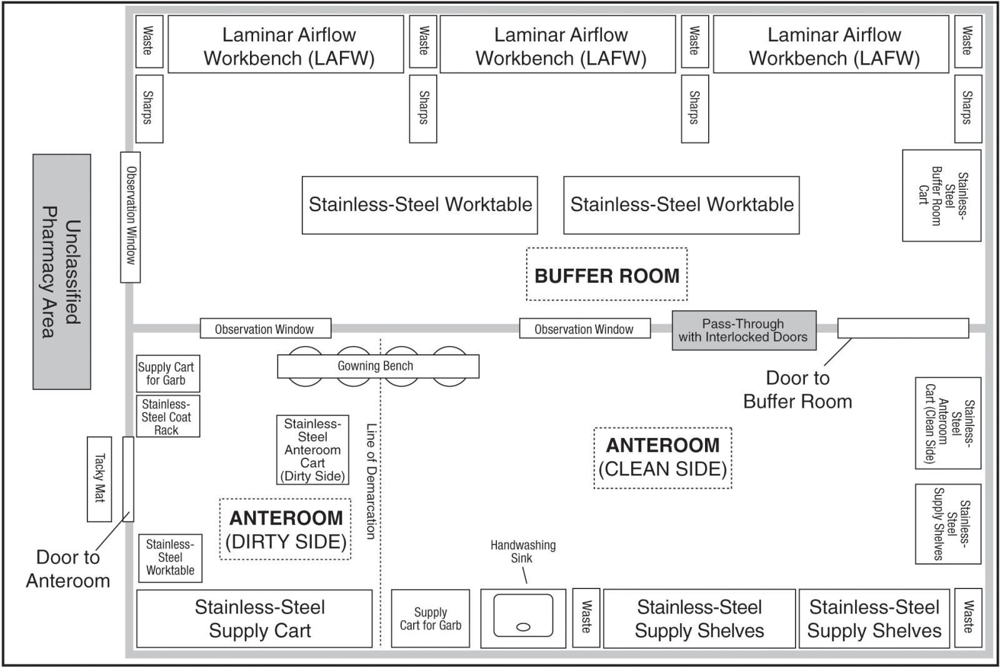
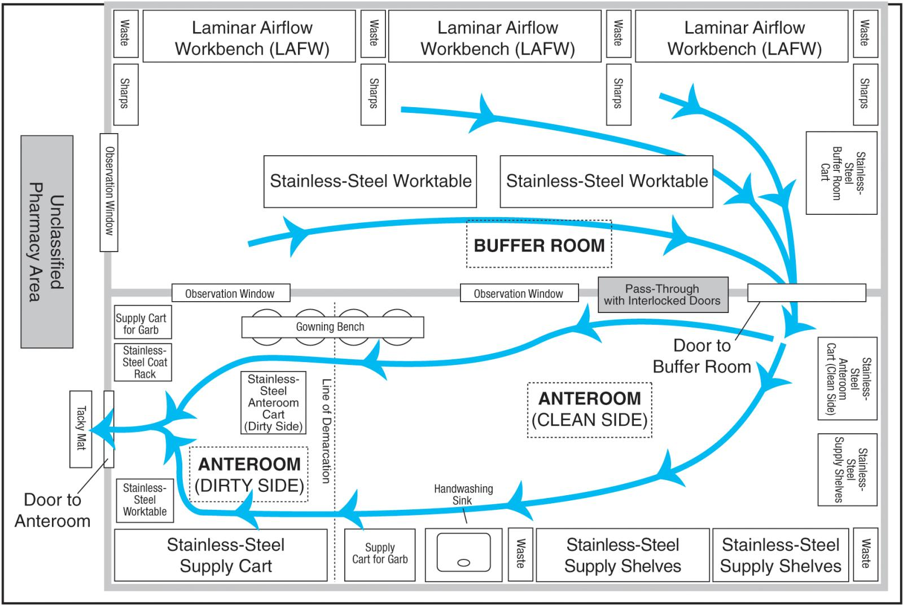
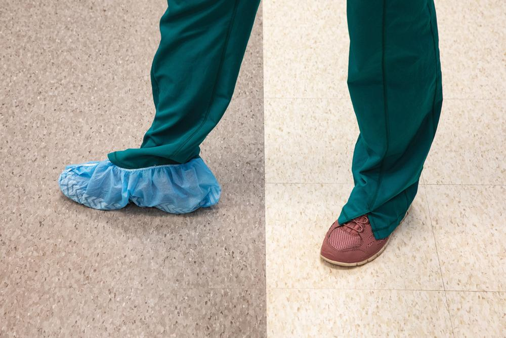
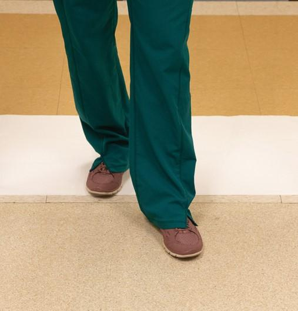
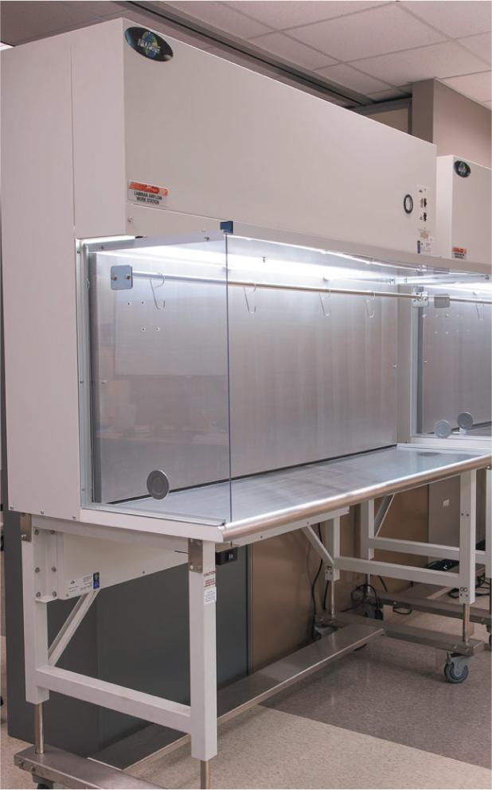

PART 1: CONCEPTS
When it was first published in 2004, USP Chapter <797> brought forth sweeping changes to the layout and design of areas in which pharmacy sterile compounding is performed. These changes caused many pharmacies to completely redesign the layout and function of their sterile compounding areas so that the cleanroom suite is separated from the rest of the pharmacy. Some changes necessitated by USP <797> (2004) required pharmacies to undergo extensive and often costly renovations to meet the standards. High-efficiency heating, ventilation, and air conditioning (HVAC) equipment, cleanroom suites constructed of nonporous materials, and controlled air pressure, temperature, and humidity serve to create appropriate sterile compounding environments that are low in particulate matter.
This chapter describes specific aspects of the sterile compounding environment that must meet the standards of USP <797> as well as federal and state regulations. These aspects include the layout, design, fixtures, and airflow systems of the cleanroom suite (anteroom and buffer room) as well as the required environmental controls (air quality, pressure, temperature, and humidity) for the preparation of compounded sterile preparations (CSPs). Other topics addressed include air quality standards, cleaning and disinfection of primary and secondary engineering controls, quality assurance standards for the environment and for CSPs, and personnel conduct and practices in the sterile compounding environment.
4.2 Sterile Compounding Environments
Sterile compounding environments are designed to minimize the potential for contamination of CSPs. Personnel proceed through progressively cleaner air by entering secondary sources of protection (secondary engineering controls or SECs) and moving toward a primary source of protection (primary engineering control or PEC). USP <797> permits two types of SECs for sterile compounding: a cleanroom suite and a segregated compounding area.
Cleanroom Suite
A cleanroom suite refers to a combined anteroom and buffer room. In some pharmacies, the anteroom may be attached to two or more buffer rooms. The layout and design of a cleanroom suite must promote compliance with USP <797> standards, facilitate efficient workflow, and be well-lit for maximum visibility. Figure 4.1 illustrates a typical layout for a cleanroom suite; however, the setup may vary among facilities. For example, some facilities incorporate an observation window that allows personnel to see into the anteroom and/or buffer room, which assists with communication and provides a mechanism for oversight into activities performed in the sterile compounding environment.

A cleanroom suite is the preferred environment for the preparation of CSPs because this strictly controlled environment allows sterile products to be prepared and stored for future patient administration, which may be the same day, the same week, or even weeks later. The storage period is determined by a CSP’s beyond-use date (BUD), which is based on the ingredients that comprise the CSP and the environment in which the CSP is prepared and stored. A CSP prepared in a cleanroom suite typically has a longer BUD than the same CSP prepared in a segregated compounding area.
As mentioned earlier, a cleanroom suite must conform to the design standards set forth in USP <797>. These standards address air quality, pressure, temperature, and humidity of the cleanroom suite. They also dictate the surface requirements of floors, walls, ceiling tiles, and lighting fixtures in this area.
Air Quality, Pressure, Temperature, and Humidity
A cleanroom suite has an HVAC system and a high-efficiency particulate air (HEPA) filtration system designed to deliver air quality that creates an appropriate ISO-classified environment for the preparation of CSPs. (For detailed information about ISO environments, see the section titled “ISO Standards” later in this chapter.) The HEPA-filtered air is blown through ceiling vents in the anteroom and buffer room, creating a positive-pressure environment. Positive pressure ensures that the airflow moves outward from the buffer room, through the anteroom, and then toward the unclassified pharmacy area (see Figure 4.2). This outward airflow helps prevents unfiltered air containing dust, spores, and other potential contaminants from traveling from the unclassified pharmacy area into the cleanroom suite. A buffer room that is used for the compounding of hazardous drugs (HDs) must be negative pressure to contain the HDs in the event of a spill. A negative-pressure buffer room will be discussed in more detail in Chapter 16.

The airflow in a cleanroom suite is measured by the number of air changes per hour (ACPH), or the number of times per hour the air in each room is exchanged with new HEPA-filtered air. The number of ACPH is determined by what is required to maintain the ISO classification and microbial state of control, and is influenced by the number of personnel allowed to work in the area, the number of particles that may be generated from activities and processes in the area, the type of equipment in the room, and the room pressure. The HEPA filters in the HVAC system must be initially certified and then independently recertified at least every six months to ensure that the sterile compounding environment meets air quality requirements.
A cleanroom suite should be maintained at a temperature of 68° F (20° C) or cooler with a relative humidity at or below 60%. These air measurements reduce the potential for microbial growth and maximize the comfort of sterile compounding personnel working in the anteroom and buffer room.
Sterile compounding personnel are responsible for record keeping of documentation related to pressure, humidity, and temperature monitors in the cleanroom suite, and for quality testing that is performed by an outside company. A pharmacy’s Standard Operating Procedures (SOPs) manual contains instructions for personnel to follow if environmental monitoring systems indicate an excursion outside of the specified parameters. Personnel should familiarize themselves with these instructions and implement the designated corrective action plan in the event of such a situation. They should also carefully document the corrective actions taken and any appropriate follow-up procedures.
Surface Requirements
The floors in the cleanroom suite must be coved to the surrounding walls, or the juncture between the floor and the wall must be caulked. Ceiling tiles must be caulked around each panel. All joints or cracks between floors, walls, and ceilings must be caulked or otherwise sealed to maintain steady air pressure and to minimize the buildup of dust and dirt. The surfaces of floors, walls, doors, ceiling tiles, lighting fixtures, and cabinetry must be smooth, nonporous, nonshedding, and easy-to-clean. These surfaces must also be free from cracks and crevices and comprised of material durable enough to maintain integrity despite rigorous, regular cleaning and disinfection with potentially harsh chemicals.
Anteroom
An anteroom is a preparatory area where sterile compounding personnel perform hand hygiene, don garb, gather supplies, perform pharmacy calculations, and complete other preparatory activities. The anteroom also provides a transition area for the pressure differential that exists between the unclassified pharmacy area and the buffer room(s). When personnel open the anteroom door, the air inside the room flows into the unclassified pharmacy area. This outward airflow helps to prevent unfiltered air from the unclassified pharmacy area from entering the anteroom.
Because it is part of the cleanroom suite, the anteroom is restricted to sterile compounding personnel and nonpharmacy personnel who are responsible for maintenance and environmental services such as cleaning or trash removal. Like sterile compounding personnel, nonpharmacy personnel must be properly trained in anteroom procedures and must follow designated processes for garbing and hand hygiene before entering the buffer room.
Anteroom Layout and Design
As depicted in Figure 4.1, a typical anteroom houses the following items:
- nonporous containers for storing garb, thus protecting these items from contaminated water droplets dispersed during hand-washing procedures
- stainless-steel hangers or hooks where reusable garb can be temporarily stored away from water spatter and foot traffic
- stainless-steel bench for personnel to use while donning garb
- one or more stainless-steel, deep-basin sinks with gooseneck faucets and hands-free operation; sinks are dedicated for hand hygiene by sterile compounding personnel
- stainless-steel wire shelves used to store a limited number of supplies
- stainless-steel worktables upon which supply items may be temporarily placed
- stainless-steel supply carts used to transport disinfected supply items into the buffer room
- automated doors into the buffer room designed for hands-free operation via a sensor, push plate, or lever.
Sterile compounding personnel should be aware that not all of the aforementioned items are required by USP <797>.
Line of Demarcation
The anteroom must have a line of demarcation that separates the room into a dirty side or area and a clean side or area. The line of demarcation could consist of a colored line on the floor or could be created by using two different colors of floor tiles, one color to designate the dirty side and one color to designate the clean side. Sterile compounding personnel enter the dirty side of the anteroom and, as they don shoe covers, they step across the line of demarcation into the clean side.

Tacky Mat
Some sterile compounding pharmacies have an 18 × 36-inch tacky mat secured to the floor of the doorway threshold that separates the anteroom from the exterior, unclassified pharmacy area where medication orders are filled, supplies are gathered, nonsterile compounding is performed, and a variety of other pharmacy activities may take place. The mat must be secured to the floor of the unclassified pharmacy area at the threshold of the anteroom. The placement of a tacky mat helps to prevent sterile compounding personnel from tracking dirt into the anteroom.
The bottom of the tacky mat has an adhesive film that adheres to the floor. The top of the tacky mat is comprised of multiple layers of a pressure-sensitive, adhesive substance designed to trap dirt and other loose substances clinging to the soles of shoes. At a designated frequency, personnel must remove the top layer of the mat to expose a fresh, tacky surface and then discard the used layer into a waste container.
The frequency for changing the top layer of the tacky mat varies among facilities and is determined by compounding volume. Facilities preparing a small volume of CSPs may have a policy that dictates that sterile compounding personnel strip the top layer of the tacky mat daily. Facilities preparing a large volume of CSPs may have a policy that requires personnel to change the top layer of the tacky mat every shift, or even more frequently. For that reason, personnel should refer to their pharmacy’s SOPs manual to determine the requirements for tacky mat changes.
Typically, sterile compounding personnel document the removal of each tacky mat layer on a log sheet. They record the date, time, and their name on the sheet.

Anteroom Supplies
Only a small number of sterile compounding supplies should be stored in the anteroom. These supplies may include syringes, needles, vials, and various items used in hand hygiene, garbing, or cleaning procedures. Before carrying the sterile compounding supplies into the clean side of the anteroom, personnel must use a low-lint wiper to wipe the exterior surfaces of the items with sterile 70% isopropyl alcohol (IPA) or another suitable surface disinfectant. Shipping cartons or other corrugated or uncoated cardboard must not be brought into the anteroom. Other items not allowed in the anteroom include nonessential furniture, equipment, or supplies; electronic devices that are not necessary for compounding or other required tasks; earbuds or headphones; and personal outer garments.
Anteroom Air Pressure and Air Quality
The anteroom must have a positive pressure of at least 0.02 inch of water column greater than the area outside of the anteroom. A pressure of 0.02 inch of water column is equivalent to approximately 0.00072 pound per square inch (PSI). To determine the difference in air pressure between the unclassified pharmacy area and the anteroom (two low-pressure environments), personnel use a pressure differential monitor. This monitor has a column of water that moves up or down in response to the relative pressure being measured.
The air in an ISO Class 8 environment like the anteroom is exchanged at least 20 times per hour, or 20 ACPH. To maintain ISO requirements and help prevent microbial contamination, the number of ACPH may need to be increased in certain situations, such as the presence of a large number of personnel working in the environment.
Buffer Room
In a sterile compounding facility, the buffer room is the innermost room with the cleanest air. This room houses the primary engineering controls (PECs), which are the hoods in which sterile compounding personnel prepare CSPs.
The buffer room is restricted to properly trained and garbed sterile compounding personnel who prepare CSPs and nonpharmacy personnel who are responsible for maintenance and environmental services. Like sterile compounding personnel, nonpharmacy personnel must be properly garbed and trained in buffer room procedures.
Buffer Room Layout and Design
The buffer room layout varies among facilities. A typical buffer room, as depicted in Figure 4.1, houses the following items:
- stainless-steel supply carts that remain in the buffer room
- waste and sharps containers that are used during sterile compounding procedures
- one or more stainless-steel worktables
- one or more PECs used for sterile compounding procedures.
Primary Engineering Controls
The buffer room may house several types of ISO Class 5 PECs that provide an appropriate environment for sterile compounding. An ISO Class 5 environment allows no more than 3,520 particles of 0.5 micron per cubic meter of air. (To learn more about ISO environments, refer to the section titled “ISO Standards” later in this chapter.) PECs must be positioned in the buffer room so that airflow is not disrupted by air currents from HEPA filters or air vents, opened doors, or personnel traffic.
Each PEC differs in design, function, and operation, but they share one similarity: They blow unidirectional, HEPA-filtered air over the direct compounding area (DCA) with enough velocity to sweep particles away from the critical sites of supplies during the sterile compounding process. This action minimizes the potential for contaminating CSPs. The most common PEC used in sterile compounding is a horizontal laminar airflow workbench or LAFW. (For detailed information on a LAFW and other types of PECs, refer to the section titled “Airflow Systems Used in Sterile Compounding.”)

Buffer Room Supplies
Supplies for sterile compounding procedures should not be stored in the buffer room. These supplies must be wiped down by personnel using low-lint wipers and sterile 70% IPA just before they carry them from the anteroom into the buffer room and, ultimately, into a PEC. In addition, any equipment that may generate particulate matter or be difficult to clean and disinfect, such as printers, should not be kept in a buffer room.
Buffer Room Air Pressure and Air Quality
The buffer room must have a positive pressure of at least 0.02 inch of water column (or approximately 0.00072 PSI) greater than the anteroom. This pressure differential ensures that the airflow moves outward from the buffer room, through the anteroom, and then to the unclassified pharmacy area.
Air enters the buffer room continuously through HEPA filters in the ceiling and leaves through exhaust vents typically placed low on the walls. The strategic placement of HEPA filters and exhaust vents allows particles in the air to be swept from the room. The air in the buffer room is exchanged at least 30 times per hour, or 30 ACPH. To maintain ISO requirements and help prevent microbial contamination, the number of ACPH may need to be increased in certain situations, such as the presence of a large number of personnel working in the environment, the conduction of compounding activities that generate a high number of particulates, or the use of equipment that generates a high number of particulates.
Segregated Compounding Area
Aside from the cleanroom suite, the second type of sterile compounding environment is a segregated compounding area (SCA). This environment is an unclassified pharmacy area and may only be used by sterile compounding personnel for the preparation of Category 1 CSPs, which have a BUD of 12 hours or less at controlled room temperature or 24 hours or less when refrigerated.
SCA Layout and Design
An SCA must meet the specifications outlined in USP <797>. These specifications dictate that an SCA must be in a restricted area of the pharmacy and away from unsealed windows, exterior doors, or unnecessary traffic flow, all of which may adversely affect air quality. In addition, an SCA must not be located near environments that represent a heightened potential for contamination such as restrooms, food preparation and serving areas, and warehouse areas designated for large-scale shipping, receiving, and storage of supplies and equipment.
The design of an SCA must include a visibly defined perimeter. This perimeter may be designated by fixed walls or by another means such as a section of floor tiles that are a different color than the floor tiles in the surrounding pharmacy area.
SCA Air Pressure and Air Quality
An SCA has no specifications for air pressure or ACPH when used for nonhazardous sterile compounding. An SCA used for hazardous drug compounding is called a containment segregated compounding area (C–SCA) and must have negative pressure. HEPA-filtered air is not required in either an SCA or a C–SCA; therefore, HVAC vents should be positioned so that air does not disrupt airflow in the PECs. While working within the PECs, sterile compounding personnel must protect the unidirectional nature of airflow during sterile compounding procedures and minimize the potential for microbial contamination of the CSP.
SCA Surface Requirements
Just like surfaces in the cleanroom suite, surfaces in the SCA should be smooth, impervious, free from cracks and crevices, and nonshedding so they may be easily cleaned and disinfected. Wood, wood laminate, or other materials that can crack or otherwise shed particles should not be used in this environment. Surface cleaning and disinfection must be conducted by trained personnel, using appropriate agents, on a schedule defined in USP <797>. (For more information on cleaning and disinfection of surfaces, see the section titled “Cleaning and Disinfection Process of SECs” later in this chapter.)